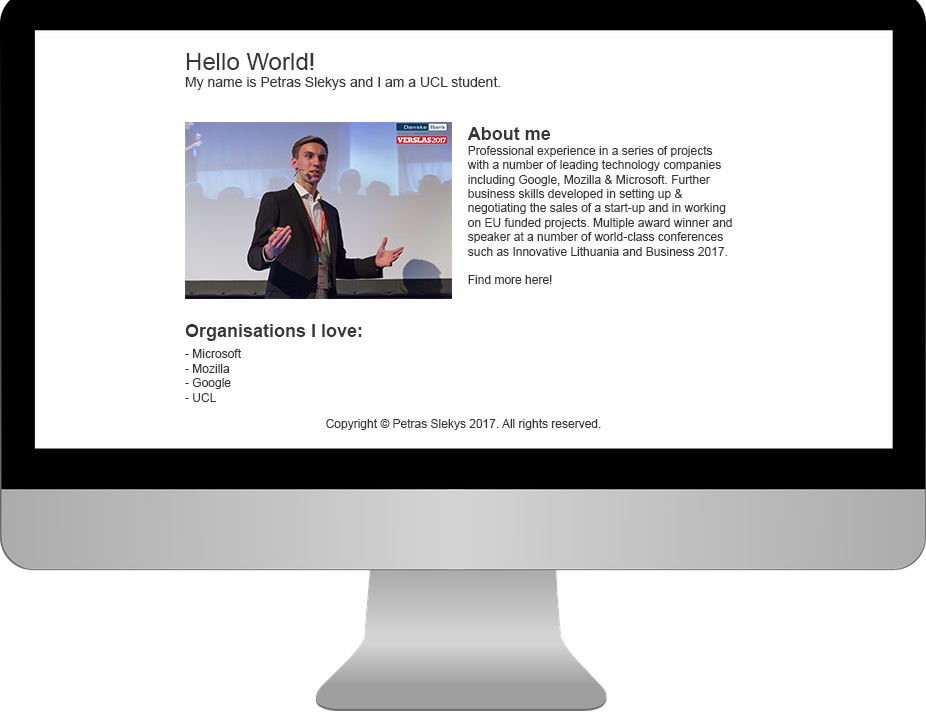

After the previous lectures by Alex Lakatos, Jean-Yves Perrier and Dr. Karen Stepanyan you should be confident with:
Before we start this lecture, could you please ensure you aready have:
Before we start writting the code, we need to think about how the system will work and how it should look like to maximise consumer satisfaction. This involves considering User Interface (UI) and User Experience (UX).
We will use Moqups to put our thoughts down and wireframe the website. They will provide every UCL student with a basic account for free, just enter your email here for an upgrade (you must already have an account there).
Let's create a website wireframe about us! An example:
Now that we know exactly how the website should be structured, let's start writing HTML/CSS and make it a website. If you struggle (forgot what HTML or some elements mean - I_Forgot_Everything), don't know where to start or too lazy to begin HTML, check this Github page, where I wrote templates of a website for people with different levels of knowledge.
Now that we have a website, we want it to be on the internet, not only on our computers. For this, we want to setup a server, which is a very powerful computer or even multiple computers.
Let's create a VM (Virtual Machine) on Microsoft Azure and connect to it using Putty (if Windows user) or through terminal for Mac and Linux:
ssh username@IPaddress
Now we want to install software on the server, which will host the website. The two main providers are Apache and Nginx. In this tutorial we will be using Apache.
First, let's update our server's packages. (sudo means granting root access - like 'run as administrator')
sudo apt-get update
sudo apt-get upgrade
Install Apache
sudo apt-get install apache2
Yes, now we have a running server! To access the default server website, go to http://IPaddress
Filezilla
Yes, very much so and let's talk about why in this presentation now! The main differences are:
If you paid attention in class today and know HTML/CSS, congratulation! You can now start searching for junior front-end developer roles to work in startups.
By the end of today, we hope you know: